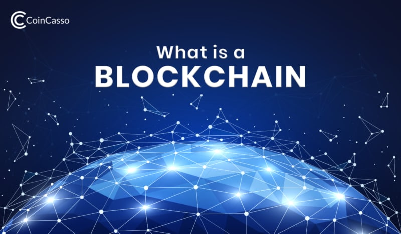
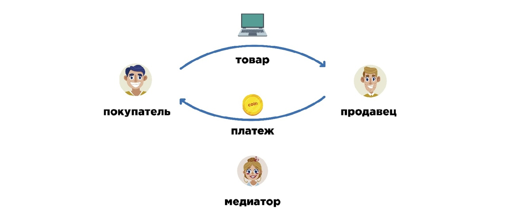

Введение
О блокчейне
Блокчейн (Blockchain) это выстроенная по определённым правилам непрерывная последовательная цепочка блоков, содержащих информацию. Блокчейн как вечный цифровой распределённый журнал экономических транзакций, который может быть запрограммирован для записи не только финансовых операций в качестве криптовалюты, но и практически всего, что имеет ценность. Но такое определение не даёт достаточного понимания, что это такое и как он работает. Рассмотрим блокчейн более подробно и постараемся просто и доходчиво объяснить, что же это за технология.

Блокчейн — это универсальный инструмент для построения различных баз данных, который обладает следующими преимуществами:
- Децентрализация. Отсутствует главный сервер хранения данных. Все записи хранятся у каждого участника системы.
- Полная прозрачность. Любой участник может отследить все транзакции, проходившие в системе.
- Конфиденциальность. Все данные хранятся в зашифрованном виде. Пользователь может отследить все транзакции, но не может идентифицировать получателя или отправителя информации, если он не знает номера кошелька. Для проведения операций требуется уникальный ключ доступа.
- Надёжность. Любая попытка внесения несанкционированных изменений будет отклонена из-за несоответствия предыдущим копиям. Для легального изменения данных требуется специальный уникальный код, выданный и подтверждённый системой.
Позволяя цифровой информации распространяться, но не копироваться, технология блокчейн создала основу нового вида интернета. Технология была первоначально разработана для цифровой валюты, биткоина, но в настоящее время техническое сообщество ищет другие потенциальные варианты использования данной технологии.
Как это работает?
Базовая система блокчейна представляет из себя постоянно растущую последовательность блоков, которые разделяются между участниками с помощью пиринговых сетей, которыми большинство людей пользуются для скачки и раздачи торрентов. В каждый блок добавляется временная отметка (хэш-сумма), которую проще всего представить как уникальный отпечаток пальца. Эти блоки строго в определенном порядке складываются в цепочки («blockchain» — буквально «цепь блоков»). Если попытаться переставить последовательность блоков, то система отвергнет цепь из-за несоответствия структуры и хеш-суммы.О нейросети
Нейронные сети — это такой набор связей и алгоритмов, который прямо сейчас работает в нашем мозге. При помощи этого набора мы видим, анализируем и принимаем решения. И вышло так, что программисты взяли и переложили этот принцип в компьютерные сети. Теперь одно изображение от другого отличают не биологические процессы, а машинный код.
До широкой аудитории доходят только громкие случаи применения нейросетей. Например, когда нейросеть Яндекса записывает музыкальный альбом или ребята из Беларуси снимают короткометражку по сценарию, который написала машина. Всё это громко, необычно, но бесполезно. Основная цель таких акций — привлечь внимание к технологии, показать всю ее необычность и силу. Такие громкие инфоповоды помогают людям увидеть, что будущее уже наступило.
Но на самом деле, нейросети каждый день выполняют задачи. Например, алгоритм Brain на основе нейросетей ежедневно работает над системой рекомендаций Ютуба. Он подбирает для пользователей релевантный контент, изучая их поведение. Поэтому ролики часто набирают просмотры не за счет прямого трафика, когда пользователь вводит запрос в поисковую строку, а тогда, когда система сама предлагает ему потенциально интересный контент.
В 2018 году нейросети вышли из закрытых лабораторий и теперь доступны в виде библиотек и фреймворков. Сейчас основная сложность — это тренировка нейросети при помощи Больших данных. Но компании поменьше тоже могут использовать нейросети для своих задач, необязательно быть Google или Yandex. Например, нейросети находят ответ на вопрос даже с неявной формулировкой. Алгоритмы word2vec определяют „векторы вопросов“ и ищут сходства в базе ответов. По подобному принципу работает AnswerBot в Zendesk. Еще нейросети автоматизируют Helpdesk. Программа назначает ответственных и ставит приоритеты без участия первой линии техподдержки. Мы реализовали подобную нейросеть для ITSM-системы ServiceNow. Нейросети используются и в лидскоринговых сервисах, которые оценивают поведение пользователей на сайте и предлагают им релевантные уведомления, спецпредложения и акции»
Про смарт-контракты

Принцип интеллектуальных контрактов был описан американским криптографом и программистом Ником Сабо еще в 1996 году задолго до появления технологии blockchain. Согласно концепции Сабо, интеллектуальные контракты — это цифровые протоколы для передачи информации, которые используют математические алгоритмы для автоматического выполнения транзакции после выполнения установленных условий и полного контроля процесса. Это определение, которое опережало свое время более чем на десять лет, остается точным и по сей день. Однако в 1996 году эта концепция не могла быть реализована: в то время необходимые технологии не существовали, в частности, распределенная книга.
В 2008 году появился bitcoin, появилась первая криптовалюта, созданная на основе революционной технологии blockchain, которой ранее не хватало децентрализованной книги. Blockchain биткоина не позволяет устанавливать условия для совершения транзакции в новом блоке, поскольку он содержит только информацию о самой транзакции. Тем не менее появление технологии послужило толчком для разработки смарт-контрактов. Спустя пять лет блочная платформа Ethereum позволила использовать смарт-контракты на практике. Сегодня рынок предлагает множество платформ, которые позволяют использовать смарт-контракты, но Ethereum остается одним из самых распространенных.
Как работают смарт-контракты
Код используется для ввода всех условий договора, заключенного между сторонами сделки, в blockchain. Обязательства участников предоставляются в интеллектуальном контракте в форме «если- то» (например: «если Сторона А переводит деньги, тогда Сторона В, передает права на квартиру»). Могут быть два или более участников, и они могут быть отдельными лицами или организациями. Как только данные условия будут выполнены, смарт-контракт самостоятельно выполняет транзакцию и гарантирует, что соглашение будет соблюдаться.
Смарт-контракты позволяют обменять деньги, товары, недвижимость, ценные бумаги и другие активы. Контракт хранится и повторяются в децентрализованной книге, в которой информация не может быть сфальсифицирована или удалена. В то же время шифрование данных обеспечивает анонимность сторон соглашения. Важной особенностью интеллектуальных контрактов является то, что они могут работать только с активами, находящимися в их цифровой экосистеме. Как подключить виртуальный и реальный мир в настоящее время является одной из основных трудностей работы со смарт-контрактами. Это является причиной существования «оракулов», специальных программ, которые помогают компьютерным протоколам получать необходимую информацию из реального мира.
Преимущества смарт-контрактов
- Скорость. Обработка документов вручную занимает много времени и задерживает выполнение задач. Смарт- контракты предполагают автоматизированный процесс и в большинстве случаев не требуют личного участия, что экономит драгоценное время.
- Независимость. Смарт-контракты исключают возможность вмешательства третьих сторон. Гарантия на транзакцию — сама программа, которая, в отличие от посредников, не даст основания сомневаться в ее целостности.
- Надежность. Данные, записанные в blockchain, не могут быть изменены или уничтожены. Если одна сторона сделки не выполняет свои обязательства, другая сторона будет защищена условиями интеллектуального договора.
- Сбережения Смарт-контракты могут обеспечить значительную экономию за счет устранения расходов для посредников и сокращения операционных расходов, а также возможность для сторон работать вместе на более выгодных условиях.